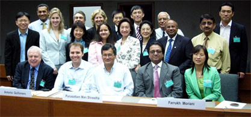

Home / News & Events / Archive / First meeting of Global Compact focal points of Asia
(Bangkok, 8 June 2006) - More than 30
representatives of Asian Global Compact networks gathered for the
“First Regional Meeting of Global Compact Focal Points in Asia”
at the United Nations Economic Commission for Asia and the Pacific (UNESCAP)
in Bangkok / Thailand on 7-8 June. Eleven countries were represented by their
national focal point, as well as in some cases by business participants that are
members of respective network governing bodies.

The purpose of the meeting was to provide network focal points with an
opportunity to share experiences and lessons learned in implementing the Global
Compact at the country level, as well as to explore regional synergies.
The meeting noted the progress made in the Asian region: the firm presence of the GC in India, its steady and constant advancement in Japan, its vibrant reality in Singapore and its solid foundations in China and in Pakistan. In the Republic of Korea, Sri Lanka, Bangladesh and Nepal the Global Compact has already positive prospects for the formation of GC Networks, and launches and outreach events will occur throughout the year. In the Philippines and Thailand new activities to attract a growing number of companies are under way.
Participants agreed that
Participants further established the “Global Compact Asia” to support regional coordination, and concrete joint regional follow-up activities were defined.
All GC Networks of the region, under the umbrella of the "Global Compact Asia", will develop an electronic publication showcasing the best cases of companies implementing the Global Compact principles. Each Asian network will contribute one or two cases. The project constitutes the first joint achievement of the Asian GC networks, and will contribute to the outreach and recruitment activities of new signatories in the region at large and in each country.
Moreover, meeting participants agreed unanimously to work towards the establishment of a Regional Support Hub based at UNESCAP. Terms of reference for this "Asian GC Support Centre" will be shared with all Asian networks. The Centre will focus on two key activities: to promote the GC in Asian countries where it is not present and to provide technical assistance for the joint activities undertaken by Asian networks. Regarding the financing of the project, conversations with likely donor countries and the assistance of the employers federations of the region are avenues to be explored in the future.
Download the meeting report here.
The second meeting of Asian Global Compact Networks will take place in late April in 2007 at UNESCAP.
(Last update 16 June 2006)